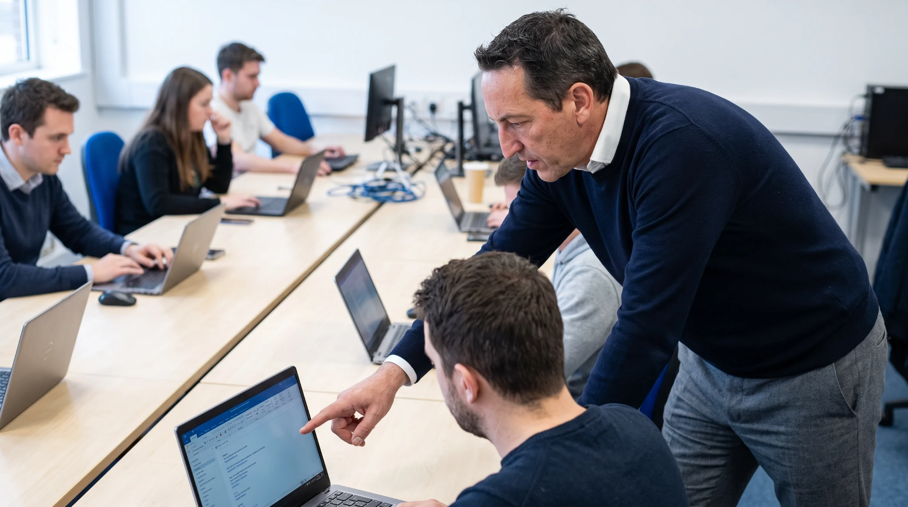

Formación ejecutiva
Programas que terminan en una decisión.
Formación en inteligencia artificial para quien tiene responsabilidad sobre una compañía o un área. Sin hype, sin futurología y sin vender licencias de nadie.
Catálogo 2026
Convocatorias abiertas.
Todos los programas son de convocatoria abierta: grupos mixtos de directivos de distintas empresas y sectores. Calendario fijo y aforo limitado, porque la discusión entre pares es parte del método.

Programa ejecutivo · Edición III
IA para Comités de Dirección
Cuatro sesiones, cuatro decisiones firmadas. Diagnóstico de madurez Stoa Index, mapa de casos de uso por departamento, marco de gobierno alineado con el AI Act y tu plan de doce meses redactado en sala.
◆ Inscripción abierta
1.690€
Por participante · IVA no incluido
Sube a 1.775 € el 12 de agosto
Ver programa →
Programa funcional · Próximamente
Stoa Track · IA por función
Cuatro itinerarios abiertos —Riesgos, Operaciones, RRHH y Comercial— para directores y responsables de área que tienen que llevar los casos priorizados del comité a su día a día. Eliges tu itinerario al inscribirte.

Programa transversal · Próximamente
Stoa Atrium · IA para equipos
Seis módulos prácticos de laboratorio: fundamentos, herramientas, prompts efectivos, casos por función, límites de uso y workflows en el día a día. Convocatoria abierta, se cursa por módulos sueltos o completo.
Cómo está construido
Tres capas. Una misma lógica.
La IA no se introduce en una empresa por un único sitio. El comité decide, los mandos priorizan y los equipos ejecutan: cada capa necesita una conversación distinta.
01 · Comité
Estrategia, gobierno y decisión. Sesiones que terminan en un acuerdo escrito. Es la capa que abre el programa de octubre.
02 · Mandos
Casos de uso por función, con taller. Directores y responsables traducen la prioridad del comité en un proyecto concreto.
03 · Equipos
Herramientas, prompts y workflows. Laboratorio práctico en convocatoria abierta, por módulos independientes.
Antes de decidir
¿No sabes por dónde empezar?
Completa el Stoa Index en tres minutos y recibe tu mapa de madurez IA en menos de 24 horas. Ocho preguntas, sin compromiso, con lectura escrita.
Hacer la valoración →
Stoa Call
Treinta minutos para ver si encaja.
Sin presentación comercial. Nos cuentas dónde estás y te devolvemos una lectura concreta de por dónde empezaríamos nosotros.